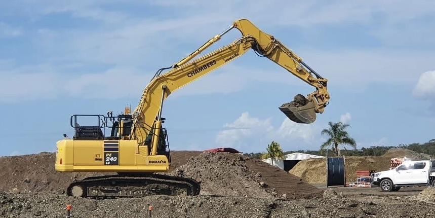
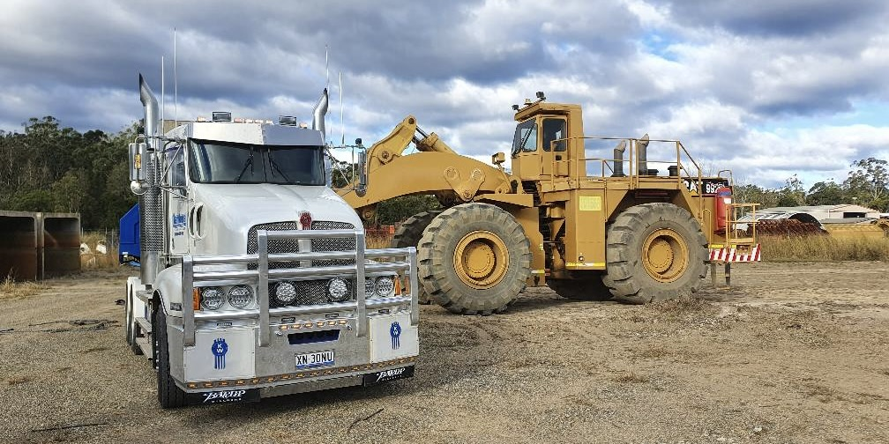

Sand and Gravel
Chambers Constructions takes pride in offering a wide range of sand and gravel materials. Our fleet of tip trucks and trailers enables us to deliver loads of any size across the North Coast, guaranteeing a dependable and efficient service.
Our Materials:
- Washed Sand
- Brickies Loam
- River Sand
- Fill Sand
- Crusher Dust
- Road Base
- Mulch
- Garden Rock
- Topsoil
Our experienced team is committed to providing high-quality materials and exceptional customer service. Whether you're a residential or commercial customer, we're here to help. Contact us today to discuss your sand and gravel needs.

